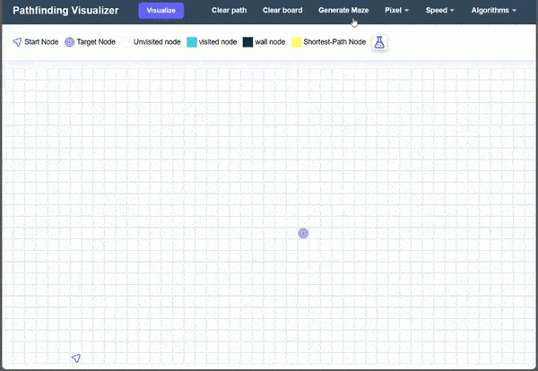

what is path finder visualizer
It helps you see how path finding algorithms find the most efficient
route between source to target on a grid.
How does it work
You can set start and end points, create mazes, choose algorithms, and watch the process in
action.
It's a fun and visual way to understand how different strategies navigate through obstacles to
find the shortest path.
Adjust source/target
Click and drag the source/target marker to where you want it on the grid.
Draw walls/obstacles
Use the 'Draw Wall' option to mark obstacles on the grid.
Simply click and drag to create walls and define the layout.
generate maze

It's time to give your pathfinding algorithm a brainstorm!
Just click Generate Maze and watch the algorithm's creativity.
Select Pixel Size
It allow you to increase or decrease the cells in the grid
helps you to get wider range in small devices, like mobile phone